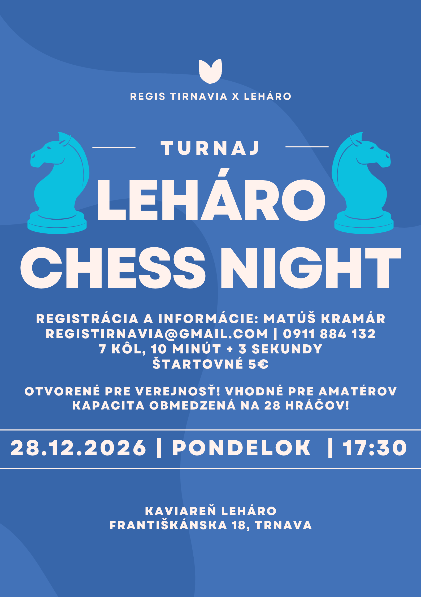

ŠACHOVÁ AKADÉMIA · TRNAVA
Šach,
ktorý rastie
s tebou.
Tréningy, turnaje a šachová komunita pre deti, mládež aj dospelých v Trnave a okolí.
NADCHÁDZAJÚCE PODUJATIE
REGIS TIRNAVIA × LEHÁRO
Leháro Chess Night.
Večer rýchleho šachu v príjemnom prostredí Kaviarne Leháro. Otvorený turnaj pre hráčov rôznych vekových a výkonnostných kategórií.
Františkánska 18, Trnava
Registrácia do 17:30, následne začiatok turnaja.

O REGIS
Šach, ktorý má zmysel.
Regis je šachová akadémia v Trnave, ktorá spája tréning, turnaje a komunitu.
Chceme vytvárať prostredie, v ktorom sa hráči môžu zlepšovať bez ohľadu na vek alebo výkonnostnú úroveň.
Od prvých šachových krokov až po súťažnú hru. Individuálne aj skupinovo.
NAŠE SMEROVANIE
Šach s jasným zmyslom.
Veríme, že šach dokáže rozvíjať schopnosti, spájať ľudí a vytvárať komunitu naprieč generáciami.
Približovať šach každému.
Vytvárať v Trnave a okolí prostredie, v ktorom môžu deti, mládež aj dospelí objavovať šach, rozvíjať svoje schopnosti a zažívať radosť z hry.
Budovať aktívnu šachovú komunitu.
Rozvíjať akadémiu, ktorá prepája tréningy, turnaje a ľudí naprieč generáciami a dáva hráčom priestor napredovať.
NÁŠ TÍM
Za šachom stoja ľudia.
RIADITEĽ A TRÉNER
Matúš Kramár
Šach je moje hobby už od desiatich rokov. Aktívne sa pohybujem v šachových kruhoch a okrem hrania som si našiel záľubu aj v trénovaní, riadení súťaží a organizovaní lokálnych turnajov.
TRÉNINGY
Zlepši svoju hru.
Od prvých šachových krokov až po súťažnú úroveň. Vyber si formu tréningu, ktorá ti vyhovuje.
Skupinové tréningy
Pravidelný šachový tréning v skupine a prostredí, ktoré motivuje k zlepšeniu.
Viac o tréningu →Tréningy pre deti
Šach pre mladých hráčov od prvých ťahov až po súťažnú úroveň.
Viac o tréningu →PREDOŠLÉ TURNAJE
Šach, ktorý spája.
Turnaje a šachové podujatia, ktoré sme organizovali v Trnave a okolí.
2024
O pohár primátora mesta Trnava
Šachový turnaj organizovaný v Trnave.
2025
O pohár primátora mesta Trnava
Pokračovanie šachového turnaja pre hráčov rôznych výkonnostných kategórií.
2026 · RAPID & BLITZ
Trnava Summer Chess Open
Letné šachové podujatie v disciplínach rapid a blitz.
2026
O pohár predsedu TTSK
Šachový turnaj organizovaný v roku 2026.
KONTAKT
Začni hrať lepší šach.
Máš záujem o tréning, turnaj alebo chceš jednoducho vedieť viac o Regis? Ozvi sa nám.
NAPÍŠ NÁM
registirnavia@gmail.com